Who uses this product
SMS360 connects school administration to teacher tasks and student or guardian views. This case follows the staff roles in the homeroom notebook, then applies the same role-first analysis to the electronic gradebook.
| Role | What they do | What the interface must support |
|---|---|---|
| School administrator | Maintains class records and assigns leadership reviewers. | Class and grade filters, notebook and download actions, grade-wide and individual assignment controls. |
| Principal | Can view notebooks across the school. | School-wide read access. Editing the final comment follows reviewer assignment. |
| Assigned leadership reviewer | Enters the leadership comment for notebooks assigned to them. | Edit permission on the final section of an assigned notebook. |
| Assigned homeroom teacher | Maintains the assigned class notebook and reads leadership feedback. | Class-scoped section editing and read access to leadership comments. |
| Subject teacher | Records grades within a teaching assignment and permitted entry window. | Edit and view permissions scoped by assignment and period. |
| Student or authorized guardian | Reads results released for that student. | Released data scoped to the student and guardian relationship. |
What the workspace covers
SMS360 supports teaching assignments, electronic grades and school records. The School Admin workbook indexes 144 functions across 15 product areas. The homeroom notebook is a representative feature because the same record supports different actions for administrators, teachers and school leadership.
My contribution and handoff
I translated operating rules into role-based UI, annotated Figma screen specifications, data rules and API samples. The notebook spec ties numbered controls to their data sources, actions and acceptance criteria. It distinguishes what staff can see, what they can edit and which record each action affects.
One notebook across reporting checkpoints
The DB design identifies a notebook by class and academic year and creates it on first access. Term selection changes the reporting content within that notebook. The primary and secondary templates can be different while the notebook identity stays stable.
Reviewer assignment and section permissions
The administrator selects a grade and may assign eligible leadership for the whole grade or for individual classes. Assignment grants permission to edit the final leadership comment. A teacher maintains the eligible sections for their class and can read the leadership section.
Separate gradebook decisions
- SMS-03-05 specifies grade-entry and visibility settings. Entry windows and edit and view permissions are separate controls.
- SMS-03-07 covers the result columns released to students and authorized guardians.
- The separate average-column rollout used a school, year and term policy. Its default applies when an active setting is missing.
What to validate
Open the same class in two reporting periods and compare its notebook ID. Reassign the leadership reviewer and verify that the former and current reviewers see the correct actions. Test grades that are editable, viewable and released as separate states.
Figma designs and handoff
What to review in Figma
I used the shared Figma library to specify the homeroom notebook and reviewer assignment. I linked numbered screen controls to their data, actions, permissions and acceptance criteria. The eight button and six input variants show how reusable controls carry across the notebook, scoped assignments and read-only states.
The images below include English translations and annotated adaptations of the Figma layouts. The sample screens use fictional records. The original design files contain the complete collections and prototype details.
Homeroom workspace
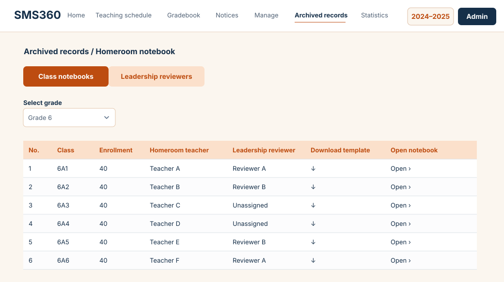
Grade filtering sits above the class table, with distinct actions for opening a notebook and downloading its template.
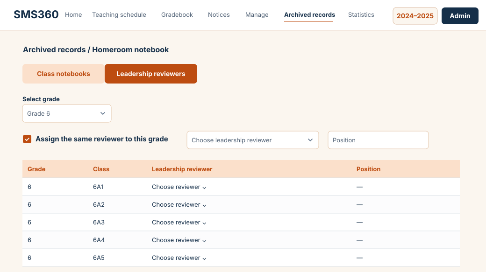
The grade-wide control and class-level selectors apply the same assignment pattern at different scopes.
Component library
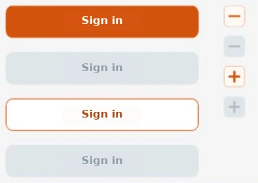
The original eight variants are shown together. The four text labels have been translated to English.

The set combines four types with default and disabled states. Leading and trailing icons are controlled separately.
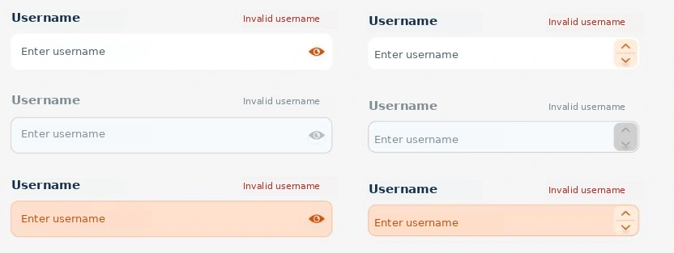
Large and small inputs are shown in default, disabled and special states. Field labels and validation text are translated into English.
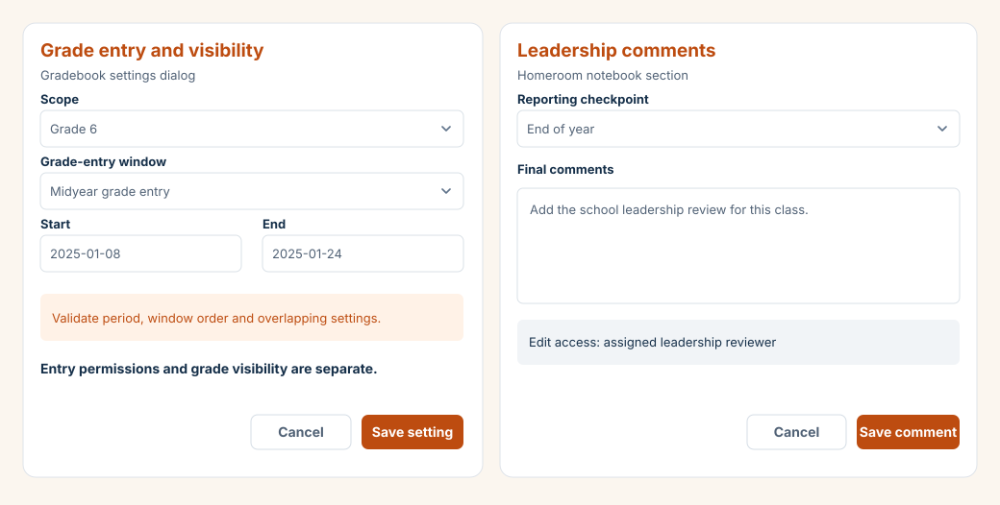
Date fields, selectors and role-sensitive editing support two school administration tasks.
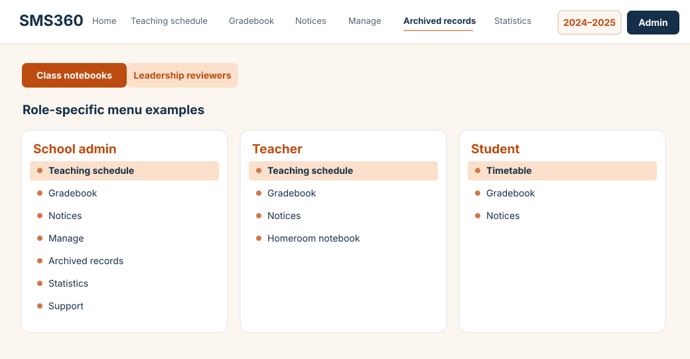
Three header variants and a two-state tab component serve administrator, teacher and student workspaces.
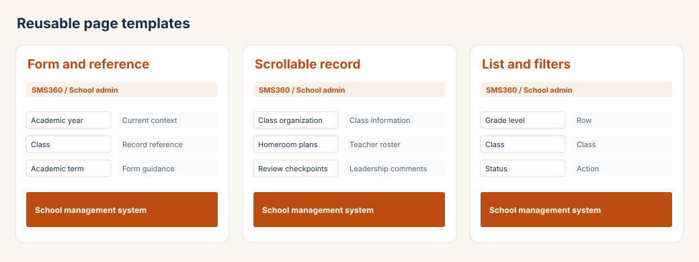
Form, record and list structures use a shared page shell and maintain context as the user moves between tasks.
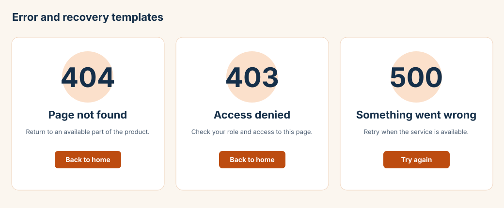
403, 404 and 500 are distinct states. Each message tells users what they can do next.
| Figma pattern | What the source shows | Handoff decision |
|---|---|---|
| Role-based navigation | The design-system board groups menu sets for administrators, teachers and students, plus headers and tabs. | Review the same screen shell against each role’s action scope. |
| Record and reviewer tabs | The adjacent pages expose the notebook list and reviewer assignments. Academic-year and grade context determine which classes are shown. | Specify the grade-scoped batch control separately from changing a single class. |
| School Admin table | The list shows class, class size, homeroom teacher, assigned reviewer, download and open actions. | The workbook maps the visible fields to their sources and states which roles may use the actions. |
| Button variants | Four types have default and disabled states. Leading and trailing icons are optional. | Specify which actions are available by role, and when prerequisites leave the action disabled. |
| Input and feedback patterns | Large and small inputs each have default, disabled and special states. The system also includes confirmation dialogs and error screens. | Identify validation text, field state and recovery for each task. |
Read the work samples
The English samples use fictional records and renamed API routes. They illustrate how the requirements, design, data model and test cases connect.
How a school’s policy determines grade visibility
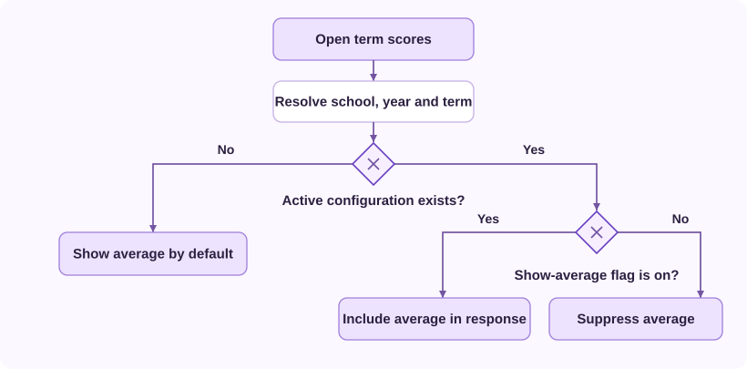
The API resolves the effective school-term policy. Missing and inactive configurations take the visible-by-default path.
| Configuration status | Show-average flag | Effective result | Score response |
|---|---|---|---|
| No configuration | — | Visible | Default applies |
| Configuration inactive | Either value | Visible | Default applies |
| Configuration active | True | Visible | Return average |
| Configuration active | False | Hidden | Suppress average in the score response |
Requirements-to-UAT traceability
These UAT cases show how each rule can be checked. The IDs are for this portfolio sample.
| Requirement | Test | Scenario | Expected outcome |
|---|---|---|---|
| GV-01 | UAT-GV-01 | Admin saves Term 2 as hidden | Only the Term 2 school policy changes. |
| GV-01 | UAT-GV-02 | A teacher attempts to change the policy | Request is denied and the saved policy is unchanged. |
| GV-02 | UAT-GV-03 | No active configuration is found | Average remains visible. |
| GV-03 | UAT-GV-04 | Active hide policy on web and mobile | Average is hidden in both channels and absent/null in the agreed score response. |
| GV-04 | UAT-GV-05 | Admin creates and then updates a policy | Both events identify the actor, time and client channel. |
| HR-01 | UAT-HR-01 | Switch reporting checkpoints in one academic year | Both checkpoints resolve to the same notebook. |
| HR-03 | UAT-HR-02 | Reviewer opens final comments; assigned teacher opens same section | Reviewer can edit comments. The teacher can read them. |
BPMN · a homeroom notebook across the school year
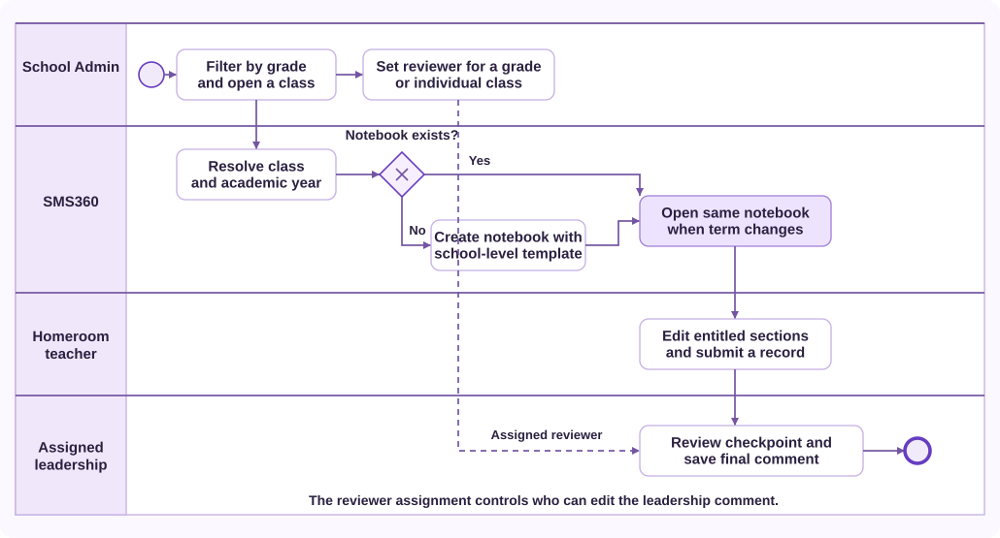
Models the relationship between notebook creation (SMS-08-01), reviewer assignment (SMS-08-02), final comments (SMS-08-11) and checkpoint reviews (SMS-08-21).
UML sequence · saving a school policy
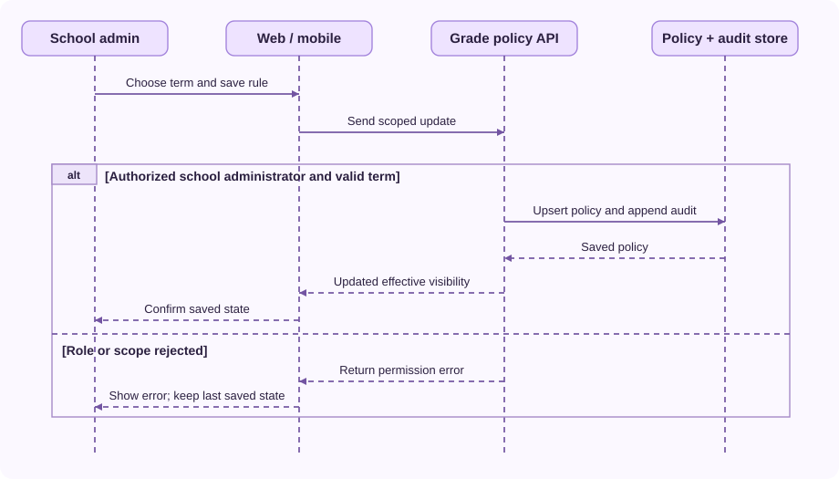
The client sends one scoped update. The validated path saves the policy and audit. The rejected path preserves the confirmed state.
ERD · preserving notebook identity
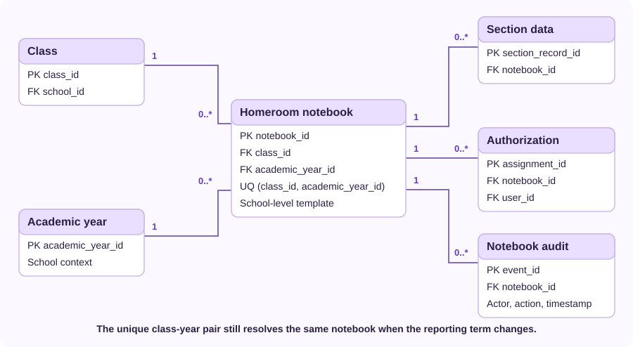
Link the notebook to the class and year. Relate reporting content, authorizations and changes to the notebook.